3. 原始数据处理#
关键要点
精确的原始数据处理将FASTQ文件转换成一个计数矩阵，通过读段比对、条形码校正以及 UMI 计数，使得可靠的单细胞测序分析成为可能。
环境设置
安装 conda:
在创建环境之前，请确保 conda 已安装在您的系统中。
保存 yml 内容:
将 yml 选项卡中的内容复制到名为
environment.yml的文件中。
创建环境:
打开终端或命令提示符。
运行以下命令：
conda env create -f environment.yml
激活环境:
创建好环境后，使用以下命令激活它：
conda activate <environment_name>
替换
<environment_name>，名称就是在environment.yml文件中指定的那个。在 yml 文件里，它看起来像这样：name: <environment_name>
验证安装:
通过运行以下命令，检查环境是否创建成功：
conda env list
3.1. 动机#
单细胞测序中的原始数据处理会将测序仪输出（即按泳道解复用后的 FASTQ 文件）转换为易于分析的表示形式，例如计数矩阵。该矩阵表示每个定量细胞中、每个基因对应的不同分子估计数量，有时还会按每个分子的推断剪接状态分类（图3.1）。
{kind=link}
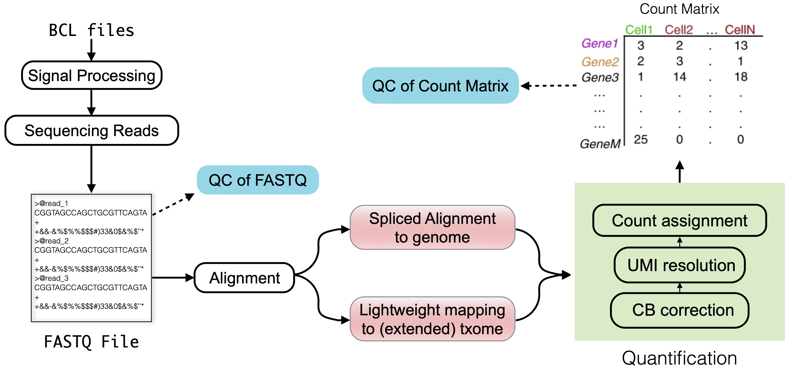
图3.1 本章所讨论主题的概览。图中的“txome”代表转录组（transcriptome）。#
计数矩阵是各种 scRNA-seq 分析的基础 [Zappia and Theis, 2021]，包括细胞类型识别或发育轨迹推断。一个稳健而准确的计数矩阵，对可靠的 下游分析至关重要。这一阶段的错误可能导致无效的结论，以及基于被遗漏的信息或数据中失真信号而得出的发现。尽管输入（FASTQ 文件）和期望的输出（计数矩阵）本身十分直观，原始数据处理仍存在若干技术挑战。
在本节中，我们侧重于原始数据处理的关键步骤:
读段比对/映射
细胞条形码识别与校正
分子数估计通过 唯一分子标识符（UMI）
我们还讨论了每一步骤所涉及的挑战和权衡。
关于前述步骤的说明
原始数据处理的起点在某种程度上是任意的。在本节的讨论中，我们将按泳道解复用后的 FASTQ 文件视为 原始 输入。然而，这些文件来自更早的步骤，例如碱基识别（base calling）和碱基质量估计，它们会影响下游处理。例如，碱基识别错误和索引跳跃（index hopping） [Farouni et al., 2020] 可能在 FASTQ 数据中引入不准确之处。这些问题可以借助计算方法[Farouni et al., 2020] 或实验上的改进来缓解，例如 双重索引.
在这里，我们不深入探讨上游过程，而是考虑FASTQ文件，这些文件来自，例如，BCL文件通过 适当工具,作为我们所考虑的原始输入。
3.2. 原始数据质量控制#
在获得原始的FASTQ文件后，必须评价测序读取的质量。采用质量控制工具，如 FastQC.
FastQC 生成每个 FASTQ 文件的详细报告，汇总关键指标，例如质量分数、碱基含量，以及其他有助于识别文库制备或测序过程中潜在问题的统计信息。
尽管许多现代单细胞数据处理工具都内置了一些质量检查——例如评估序列的 N 含量或比对上的读段比例——但单独运行一次独立的质控检查仍然是良好的做法。
对于想了解典型 FastQC 报告长什么样的读者，下面的折叠内容中给出了示例报告，针对 高质量 和 低质量 由以下机构提供的 Illumina 数据 FastQC 手册网页,以及来自 密歇根州立大学（MSU）的 RTSF, HBC 培训项目, and QC 失败网站 用于演示 FastQC 报告。虽然这些教程没有明确用于单细胞数据，但很多结果仍然与单细胞数据相关，下面有几点说明。
在切换部分中，除特别提及外，所有图表均取自关于 FastQC 手册网页.
需要注意的是，FastQC 报告中的许多 QC 指标只对生物学读段（即来自基因转录本的读段）最有意义。对于单细胞数据集（例如 10x Chromium v2 和 v3），这通常对应于 read 2（文件名中包含 R2 的那些文件），其中包含来自转录本的序列。相比之下，包含条形码和 UMI 序列的技术读段往往不呈现出生物学上典型的序列或 GC 含量。不过，某些指标，例如 N 碱基识别，仍然适用于所有读段。
示例 FastQC 报告与教程
0. 总结
HTML报告左侧的概要面板显示模块名称以及能够快速评估模块结果的符号。不过 FastQC 会对所有测序平台和生物材料采用统一的阈值。因此，高质量数据也可能出现警告（橙色感叹号）或失败（红色叉号），而存疑的数据反而可能通过（绿色对勾）。因此，在就数据质量下结论之前，应当仔细审查每一个模块。
{kind=link}
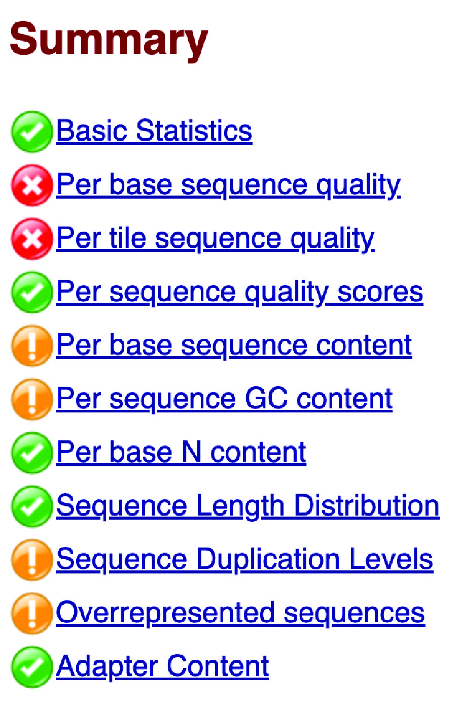
图3.2 一个坏例子的总结面板。#
1. 基本统计
基本统计（Basic Statistics）模块概述了输入 FASTQ 文件的关键信息和统计量，包括文件名、序列总数、低质量序列数、序列长度，以及所有序列全部碱基的总体 GC 含量（%GC）。高质量的单细胞数据通常只有极少的低质量序列，并呈现出一致的序列长度。此外，GC 含量应与所测序物种的基因组或转录组的预期 GC 含量相符。
{kind=link}
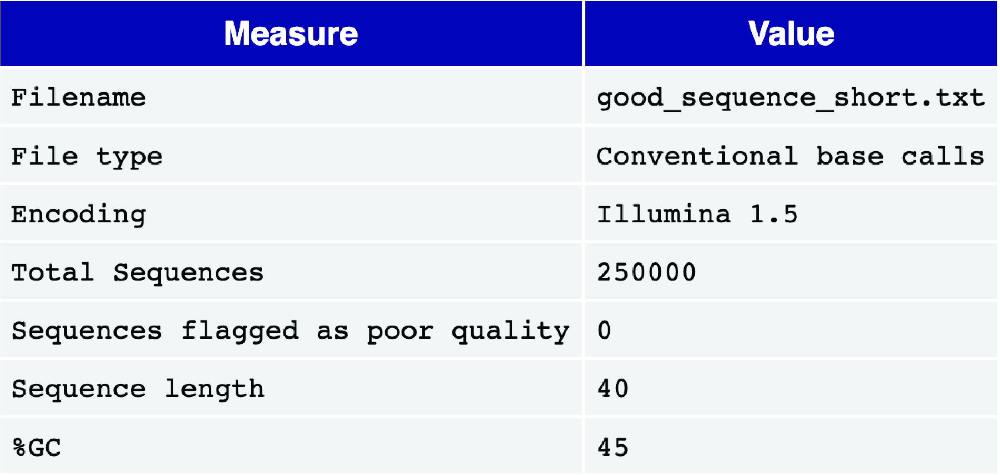
图3.3 一个良好的基本统计报告例子。#
2. 每碱基序列质量（Per base sequence quality）
每碱基序列质量视图为读段中的每个位置绘制一个箱线图。x 轴表示读段内的位置，y 轴表示质量分数。
对于高质量的单细胞数据，代表质量分数四分位距的黄色箱体应落在绿色区域内（表示质量良好的碱基识别）。同样，代表分布第 10 与第 90 百分位的须线也应保持在绿色区域内。通常会看到质量分数沿读段长度逐渐下降，末端位置的一些碱基识别会落入橙色区域（质量尚可），其原因是不断下降的 信噪比,是逐序合成方法的一个特征。然而，箱体不应延伸到红色区域（质量较差的碱基识别）。
如果观察到质量较差的碱基识别，可能需要进行质量修剪。更详细的解释，关于测序错误特征的更详细说明可参见 HBC 培训项目.
{kind=link}
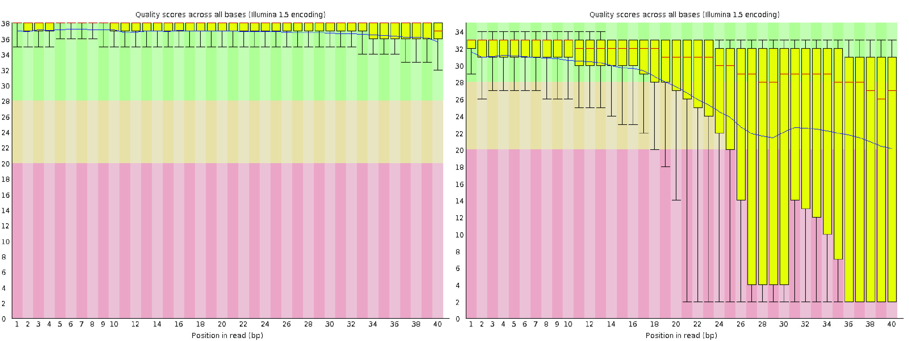
图3.4 一个好(左)和一个不好(右)的每读序列质量图。#
3. 每 tile 序列质量（Per tile sequence quality）
对于 Illumina 文库，每 tile 序列质量图突出显示了各读段相对于平均质量的偏差，按每个 tile（即流动池上 流动槽的微型成像区域）来划分。该图用颜色梯度表示偏差，暖色代表更大的偏差。高质量数据通常整张图呈现均匀的蓝色，表明流动池上所有 tile 的质量都一致。
如果某些区域出现暖色，则表明只有部分流动池质量较差。这可能源于测序过程中的瞬时问题，例如气泡通过流动池，或流动池泳道内的污渍和碎屑。若需进一步排查，可参考诸如 QC 失败，以及 常见警告原因 ，相关说明见 FastQC 手册。
{kind=link}
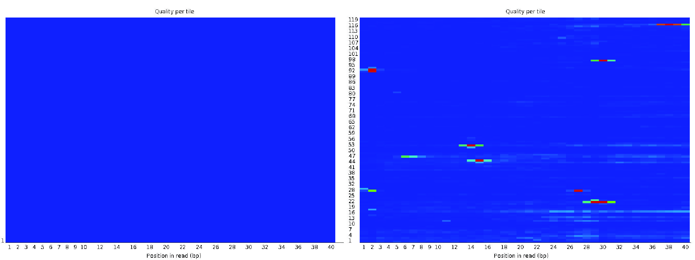
图3.5 每 tile 序列质量视图的好（左）与坏（右）。#
4. 每序列质量分数（Per sequence quality scores）
每序列质量分数图显示文件中每条读段平均质量分数的分布。x 轴表示平均质量分数，y 轴表示各分数出现的频率。对于高质量数据，该图应在高质量端附近呈现单一峰值。若出现额外的峰，则可能表明存在一部分质量有问题的读段。
{kind=link}
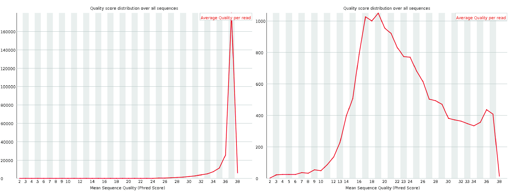
图3.6 每个序列质量分数图的好(左)和差(右).#
5. 每碱基序列含量（Per base sequence content）
每碱基序列含量图显示文件中所有读段在每个碱基位置上各核苷酸（A、T、G、C）被识别出的百分比。对于单细胞数据，常会在读段起始处观察到波动。这是因为起始的碱基对应于引物结合位点的序列，而这些位点往往并非完全随机。这在 RNA-seq 文库中很常见，尽管 FastQC 可能会将其标记为警告或失败，正如 QC 失败网站.
{kind=link}
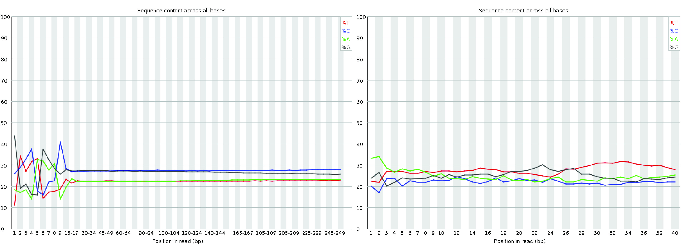
图3.7 每碱基序列含量图的好（左）与坏（右）。#
6. 每序列 GC 含量（Per sequence GC content）
每序列 GC 含量图显示所有读段的 GC 含量分布（红色），并与理论分布（蓝色）进行比较。观察到的分布其中央峰应与转录组的总体 GC 含量一致。然而，由于转录组的 GC 含量与基因组预期的 GC 分布之间存在差异，观察到的分布可能比理论分布更宽或更窄。这类差异很常见，可能会触发警告或失败，出现在 FastQC,即使数据是可以接受的。
然而，该图中若出现复杂或不规则的分布，往往提示文库存在污染。还需要注意的是，在转录组学中解读 GC 含量颇具挑战。预期的 GC 分布不仅取决于转录组的序列组成，还取决于样本中的基因表达水平，而后者通常事先未知。因此，在 RNA-seq 数据中，与理论分布存在一定偏差并不罕见。
{kind=link}
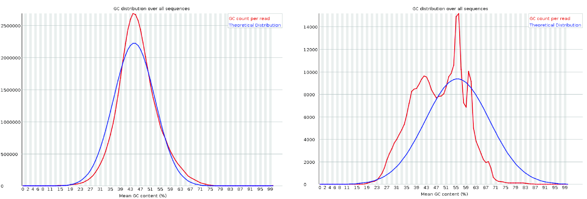
图3.8 一个好的(左)和一个不好的(右),每个序列的GC 含量图。左边的图来自 密歇根州立大学（MSU）的 RTSF。右边的图取自 HBC 培训项目.#
7. 每碱基 N 含量（Per base N content）
每碱基 N 含量图显示每个位置上被识别为 N,表示测序仪缺乏足够的信心来指定特定的核苷酸。在一个高质量的文库, N 含量应在整个读段长度上始终保持为零或接近零。 N 含量则可能表明测序质量或文库制备存在问题。
{kind=link}
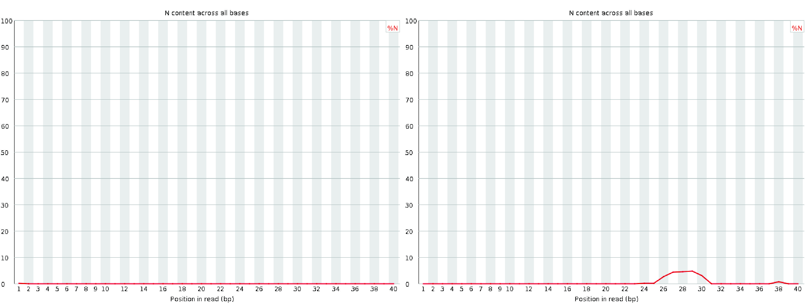
图3.9 每碱基 N 含量图的好（左）与坏（右）。#
8. 序列长度分布
序列长度分布图显示文件中所有序列读段长度的分布。对于大多数单细胞测序化学体系，所有读段的长度预期相同，因此图中会出现单一峰值。然而，如果在质量评估之前进行了质量修剪，则可能观察到读段长度存在一些变化。修剪导致的读段长度细微差异是正常的，只要在预期之内就不必担心。
{kind=link}
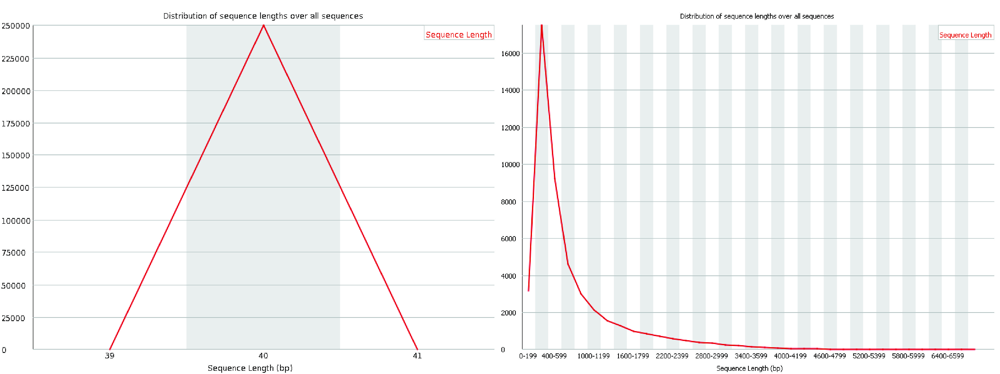
图3.10 好(左)和坏(右)的序列长度分布图。#
9. 序列重复程度
序列重复程度图用蓝线展示读段序列在去重前后的重复程度分布。在单细胞平台上，通常需要多轮 PCR，而高表达基因自然会产生大量转录本。此外，由于 FastQC 并不感知 UMI（即它不考虑独特分子标识符），因此一小部分序列出现较高的重复程度是很常见的。
虽然这可能引起本单元的警告或失败，但不一定表明数据的质量问题。然而，大多数序列的重复程度仍然较低，反映出一个多样和准备充分的文库。
{kind=link}
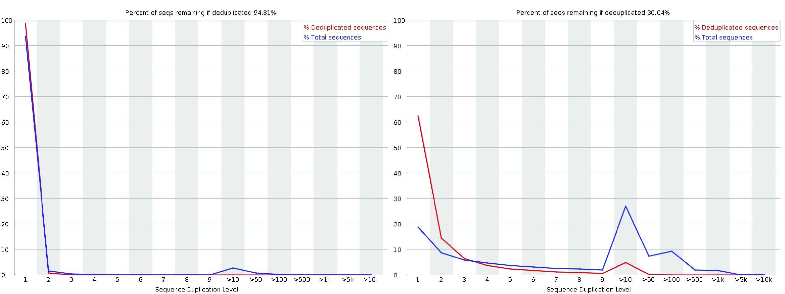
图3.11 一个好的(左)和一个不好的(右) 每序列重复级别图。#
10. 过度代表的序列（Overrepresented sequences）
过度代表序列模块用于识别占总读段数 0.1% 以上的读段序列。在单细胞测序中，一些过度代表的序列可能来自在 PCR 过程中被扩增的高表达基因。但大多数序列不应出现过度代表的情况。
如果某条过度代表序列的来源被识别出来（即没有被列为“No Hit”），则可能表明文库受到了来自相应来源的污染。这类情况需要进一步排查，以确保数据质量。
{kind=link}
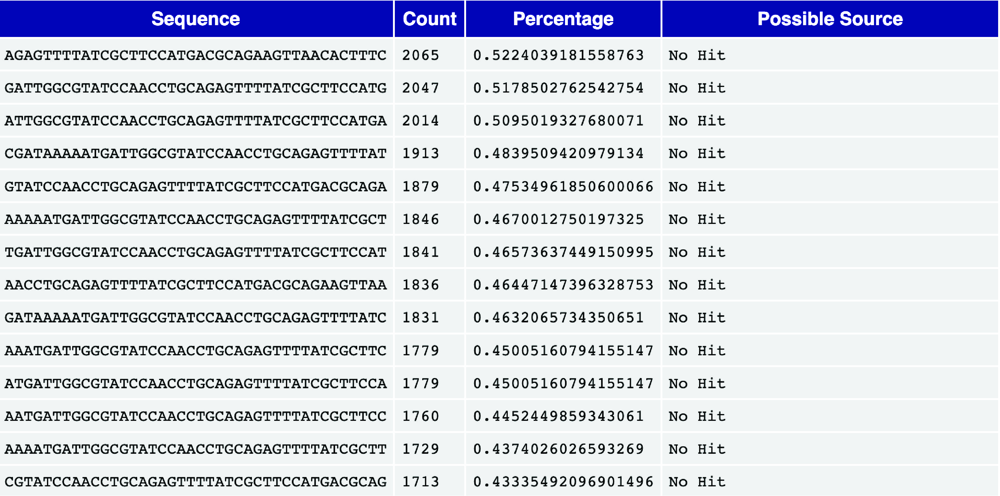
图3.12 一张过度代表序列表。#
11. 接头含量（Adapter content）
接头含量模块显示了在各碱基位置上含有 接头序列 序列的读段的累计百分比。接头序列含量过高，表明在文库制备过程中接头去除不彻底，这可能干扰下游分析。理想情况下，数据中不应存在明显的接头含量。若接头序列较多，可能需要额外修剪以提升数据质量。
{kind=link}
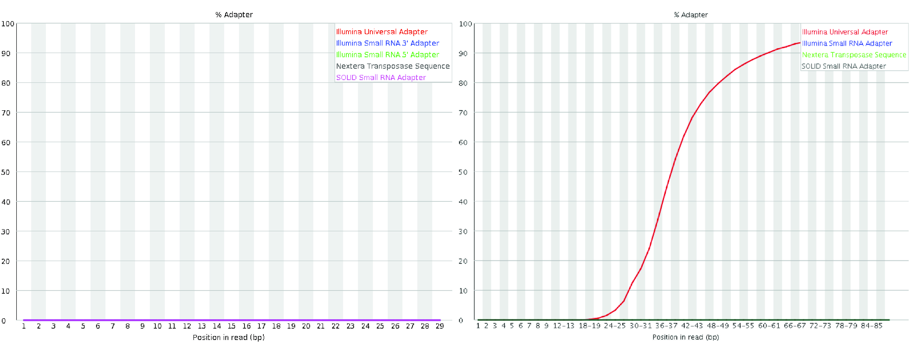
可使用以下工具将多份 FastQC 报告合并为一份报告： MultiQC.
3.3. 比对与映射#
映射或比对是单细胞原始数据处理中的关键一步。它涉及确定每个被测序片段可能的 loci 来源，例如与读段序列高度匹配的基因组或转录组位置。这一步对于将读段正确分配到其来源区域至关重要。
在单细胞测序方案中，原始序列文件通常包括:
作为第一步图3.1），准确的映射或比对对于可靠的下游分析至关重要。这一步中的错误——例如将读段错误地映射到转录本或基因上——可能导致计数矩阵不准确或具有误导性。
虽然将读段序列映射到参考序列的做法 远 早于 scRNA-seq 的出现，但现代 scRNA-seq 数据集规模庞大——往往涉及数亿到数十亿条读段——使这一步在计算上尤为密集。许多现有的 RNA-seq 比对工具与具体方案无关，并不会自动考虑 scRNA-seq 特有的特征，例如细胞条形码、UMI 及其位置和长度。因此，往往需要额外的工具来完成解复用和 UMI 解析等步骤 [Smith et al., 2017].
为应对 scRNA-seq 数据比对与映射的挑战，人们开发了若干专门的工具，它们会自动或在内部处理这些额外的处理需求。这些工具包括：
Cell Ranger（来自 10x Genomics 的商业软件） [Zheng et al., 2017]zUMIs[Parekh et al., 2018]alevin[Srivastava et al., 2019]RainDrop[Niebler et al., 2020]kallisto|bustools[Melsted et al., 2021]STARsolo[Kaminow et al., 2021]alevin-fry[He et al., 2022]
这些工具提供了专门的能力，用于比对 scRNA-seq 读段、解析技术读段内容（例如细胞条形码和 UMI）、解复用以及 UMI 解析。尽管它们提供了简化的用户界面，但其内部方法差异很大。一些工具会生成传统的中间文件，例如 BAM 文件，再对其做进一步处理；而另一些工具则完全在内存中运行，或使用紧凑的中间表示，以尽量减少输入/输出操作并降低计算开销。
虽然这些工具在具体的算法、数据结构以及时间和空间复杂性的权衡方面各不相同，但其方法一般可以按两个轴线分类:
它们所执行的映射类型, and
它们将读段映射到的参考序列类型.
3.3.1. 映射的类型#
我们重点关注三类常用于映射 sc/snRNA-seq 数据的主要映射算法：剪接比对、连续比对，以及轻量级映射的各种变体。
首先，我们区分基于比对的方法和基于轻量级映射的方法（图3.14）。基于比对的方法使用各种启发式策略来识别读段可能来源的潜在位点，然后通常借助动态规划算法，对读段与参考序列之间最佳的核苷酸级比对进行打分。
全局比对 会对查询序列和参考序列进行整体比对，而 局部比对 则侧重于对子序列进行比对。短读段比对通常采用半全局方法，也称为“拟合（fitting）”比对，其中查询序列的大部分会比对到参考序列的某个子串上。此外，还可使用“软剪切（soft-clipping）”来减少读段起始或末端处错配、插入或缺失所带来的罚分，这通过 “延伸（extension）”比对。尽管这些变体修改了动态规划递推和回溯的规则，但并未从根本上改变其整体复杂度。
为提高基因组测序读段比对的实际效率，人们开发了若干精巧的改进和启发式方法。例如， banded alignment [Chao et al., 1992] 是许多工具采用的一种常用启发式方法，用于在不关心低于某一阈值的比对得分时，避免计算动态规划表的大部分内容。其他启发式方法，例如 X-drop [Zhang et al., 2000] 和 Z-drop [Li, 2018]，能在过程早期高效地剪除没有前景的比对。近期的一些进展，例如波前比对（wavefront alignment） [Marco-Sola et al., 2020]（marco2022optimal）则能在显著缩短的时间和空间内确定最优比对，尤其是在存在高分比对时。此外，许多工作着眼于优化数据布局和计算，以利用指令级并行 [Farrar, 2007, Rognes and Seeberg, 2000, Wozniak, 1997],并以促进数据并行和向量化的方式来表达动态规划递推，例如通过差分编码（difference encoding） Suzuki and Kasahara [2018]。大多数广泛使用的比对工具都采用了这些高度优化、向量化的实现。
除了比对得分之外，产生该得分的实际比对的回溯通常会被编码为一个 CIGAR 字符串（“Concise Idiosyncratic Gapped Alignment Report”，即简明特异空位比对报告的缩写）。这种字母数字表示通常存储在 SAM 或 BAM 文件输出中。例如， CIGAR 字符串 3M2D4M 表示该比对有 3 个匹配或错配，接着是一个长度为 2 的缺失（代表存在于参考序列中、但不在读段中的碱基），然后再有 4 个匹配或错配。扩展 CIGAR 字符串可以提供额外的细节，例如区分匹配，不匹配，或插入。比如说, 3=2D2=2X 编码的比对与上一个示例相同，但指明删除之前的三个碱基为匹配，删除之后则是两个匹配的碱基和两个错配的碱基。有关 CIGAR 字符串格式可见于 SAMtools 手册 或 UMICH的SAM维基页面.
基于比对的方法虽然计算开销较大，但能为读段的每一种可能映射提供质量分数。该分数使其能够区分高质量比对与读段和参考之间低复杂度或“假阳性（spurious）”的匹配。这类方法包括传统的“全比对”方法，例如以下工具中实现的方法： STAR [Dobin et al., 2013] 和 STARsolo [Kaminow et al., 2021],还有 selective-alignment 方法，像那些在 salmon [Srivastava et al., 2020] 和 alevin [Srivastava et al., 2019]，它们对映射进行打分，但跳过对最优比对回溯的计算。
{kind=link}
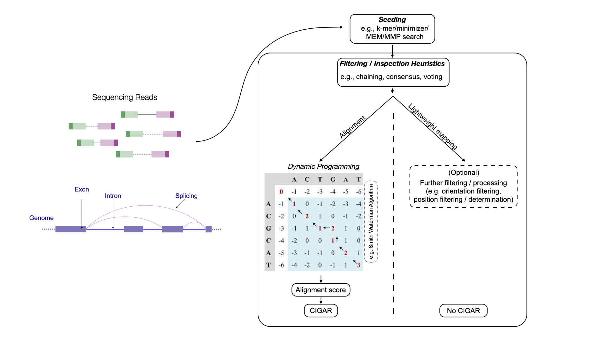
图3.14 基于比对的方法与基于轻量级映射的方法的抽象概览。#
基于比对的方法可分为剪接比对方法和连续比对方法。
剪接比对方法
剪接比对方法允许一条序列读段比对到参考序列上多个不同的片段，从而在比对区域之间可能存在较大的空位。这类方法对于将 RNA-seq 读段比对到基因组尤为有用，因为读段可能跨越 剪接位点。在这种情况下，读段中一段连续的序列，在参考序列中可能被内含子和外显子的子序列分隔开，跨度可达数千个碱基。当读段只有一小部分与剪接位点重叠时，剪接比对尤其困难，因为可用于准确定位悬出片段的序列信息十分有限。
连续比对方法
连续比对方法要求参考序列中有一段连续的子串能与读段良好对齐。虽然可以容忍小的插入和缺失，但通常不允许出现大的空位——例如剪接比对中的那种空位。
基于比对的方法（例如剪接比对和连续比对）可以与 轻量级映射方法区分开来，后者包括诸如 pseudoalignment [Bray et al., 2016], quasi-mapping [Srivastava et al., 2016], and 带结构约束的伪比对 [He et al., 2022].
轻量级映射方法的速度显著更高。然而，它们无法提供易于解读的、基于分数的评估来判断匹配质量，因此更难评估比对的可信度。
3.3.2. 针对不同参考序列的映射#
除了选择映射算法之外， 也 可以就读段所映射到的参考序列做出选择。参考序列主要分为三类：
完整参考基因组（通常带注释）
带注释的转录组
增广转录组
目前，并非映射算法与参考序列的所有组合都可行。例如，轻量级映射算法尚不支持将读段针对参考基因组进行剪接映射。
3.3.2.1. 映射到完整基因组#
用于映射的第一类参考是目标生物的 整个基因组，映射时通常会一并考虑带注释的转录本。诸如 zUMIs [Parekh et al., 2018], Cell Ranger [Zheng et al., 2017], and STARsolo [Kaminow et al., 2021] 遵循这一做法。由于许多读段来源于 剪接转录本,该方法要求 剪接感知比对算法 能够将比对拆分到一个或多个剪接位点上。
这种方法的一个关键优势在于，它能解释来自基因组中任意位置的读段，而不仅仅是来自带注释转录本的读段。此外，由于构建了 全基因组索引，因此除了报告映射到已知剪接转录本的读段之外，报告那些与内含子重叠或比对到非编码区的读段也几乎不增加额外成本，这使得该方法同样适用于 单细胞 和 单核 数据。另一个好处是，即使是映射到带注释转录本、外显子或内含子之外的读段，也仍然能够被纳入考量，从而能够对已定量的位点进行 事后（post hoc） 扩充 。
3.3.2.2. 映射到剪接转录组#
为减少将读段剪接比对到基因组所带来的计算开销，一种被广泛采用的替代方案是只使用带注释的转录本序列作为参考。由于大多数单细胞实验都在小鼠、人类等模式生物上进行，而这些生物拥有注释良好的转录组，因此基于转录组的定量能够达到与基于基因组的方法相近的读段覆盖度。
与基因组相比，转录组序列要小得多，从而显著减少了映射所需的计算资源。此外，由于剪接模式已经体现在转录本序列中，这种方法无需进行复杂的剪接比对；相反，只需为读段寻找连续比对或映射即可。也就是说，读段也可以通过连续比对来映射，这使得基于比对的方法和轻量级映射技术都适用于转录组参考。
虽然这些方法大幅减少了比对和映射所需的内存与时间，但它们无法捕获来自剪接转录组之外的读段。因此，它们不适合处理单核数据。即使在单细胞实验中，来自剪接转录组之外的读段也可能占全部数据的相当大一部分，而且越来越多的证据表明，这类读段应被纳入后续分析 [Pool et al., 2022, 10x Genomics, 2021]。此外，当与轻量级映射方法配合使用时，剪接转录组与产生某条读段的实际基因组区域之间共享的短序列，可能导致虚假映射。这反过来又可能造成具有误导性、甚至在生物学上不合理的基因表达估计 [Brüning et al., 2022, He et al., 2022, Kaminow et al., 2021].
3.3.2.3. 映射到增广转录组#
为了将来自剪接转录本之外的读段也考虑在内，可以用额外的参考序列来扩充剪接转录本序列，例如全长未剪接转录本或被切除的内含子序列。与全基因组比对相比，这样能实现更好、更快、更省内存的映射，同时仍能捕获许多原本会被遗漏的读段。与仅使用剪接转录组相比，可以更有把握地分配更多读段；而当与轻量级映射方法结合时，虚假映射可以显著减少 [He et al., 2022]。增广转录组被广泛用于那些不映射到完整基因组的方法中，尤其是在单核数据处理以及 RNA velocity 分析 [Soneson et al., 2021] (见 RNA velocity）。对于所有不依赖于在完整基因组上进行剪接比对的常用方法，都可以构建这种增广参考 [He et al., 2022, Melsted et al., 2021, Srivastava et al., 2019].
3.4. 细胞条形码校正#
基于液滴的单细胞分离系统（例如 10x Genomics 提供的系统）已成为研究细胞异质性成因与后果的重要工具。在这种分离系统中，每个被捕获细胞的 RNA 物质会在一个水相液滴中被包裹并提取出来，同时还伴随一颗 条形码珠。这些微珠用独特的寡核苷酸（称为细胞条形码，CB）标记单细胞的 RNA 内容，随后这些条形码会与由 RNA 内容逆转录而来的 cDNA 片段一起被测序。微珠上带有高度多样化的 DNA 条形码，从而能够对一个细胞的分子内容进行并行加条形码，并实现 以计算机（in silico）方式 将测序读段解复用到各个细胞分箱中。
关于比对方向的说明
根据样本所用的试剂体系（chemistry）和用户自定义的处理选项，并非所有比对到参考序列的测序片段都一定会被纳入定量和条形码校正。一个常用的过滤标准是比对方向。具体而言，某些试剂体系所规定的方案要求：比对上的读段只能以特定方向来源于（即映射回）底层的转录本。例如，在 10x Genomics 3′ Chromium 试剂体系中，我们期望生物学读段比对到底层转录本的正义链上，尽管反义读段确实存在 [10x Genomics, 2021]。因此，以反向互补方向比对到参考序列的读段，可能会根据用户自定义的设置被忽略或过滤掉。如果某种试剂体系遵循这种所谓的“链特异性（stranded）”方案，则应当将其记录下来。
3.4.1. 条形码错误类型#
用于单细胞分析的标签、测序和解复用方法总体上是有效的。然而，在基于液滴的文库中，观测到的细胞条形码（CB）数量，可能与最初被包裹的细胞数量相差悬殊——往往相差数倍。这种差异源于几个关键的误差来源：
双细胞/多细胞:单个条形码可能与多个细胞相关联，从而导致对细胞数的低估。
空液滴：有些液滴内没有包裹任何细胞，而游离 RNA 可能被打上条形码并被测序，从而导致对细胞数的高估。
序列错误：PCR 扩增或测序过程中引入的错误会扭曲条形码计数，同时造成低估和高估。
为了解决这些问题，用于将 RNA-seq 读段解复用到各细胞专属分箱的计算工具，会使用各种诊断指标来过滤掉伪影或低质量数据。目前已有大量去除环境 RNA 污染的方法 [Lun et al., 2019, Muskovic and Powell, 2021, Young and Behjati, 2020], detecting doublets [Bais and Kostka, 2019, DePasquale et al., 2019, McGinnis et al., 2019, Wolock et al., 2019],并根据核苷酸序列的相似性纠正细胞条形码错误。
细胞条形码识别和校正使用了若干共同策略。
针对一份已知的 潜在 条形码：某些试剂体系（例如 10x Chromium）会从一个已知的候选条形码序列池中抽取 CB。因此，任何样本中观测到的条形码集合，预期都应是这一已知列表的子集，该列表通常称为“白名单（whitelist）”。在这种情况下，标准方法假定：
任何匹配已知列表条目的条形码都是正确的。
任何不在该列表中的条形码，都会通过从白名单中找到最接近的匹配来校正，通常使用 汉明距离 或 编辑距离。这种策略可以高效地校正条形码，但也有局限。如果一个出错的条形码与白名单中的多个条形码都高度相似，那么它的校正就会变得含糊不清。例如，对于一个取自 10x Chromium v3 白名单、并在单个位置上突变成一个不在列表中的条形码而言，存在一定 \(\sim 81\%\) 的概率，使其与白名单中两个或更多条形码之间的汉明距离为 \(1\) （相同）。这种碰撞的概率，可以通过只考虑校正 仅 那些本身恰好出现在该样本中的已知白名单条形码（甚至只针对那些在该样本中出现频率高于某一标称阈值的条形码）来加以降低。此外，在出现含糊校正时，还可以利用诸如“被校正”位置的碱基质量等信息，来尝试打破这种两可的局面。然而，随着检测细胞数量的增加，候选细胞条形码集合的序列多样性不足，会提高含糊校正出现的频率，而带有含糊校正条形码的读段，通常会被直接丢弃。
基于拐点（knee/elbow）的方法：如果候选条形码集合未知——或者即使已知，但人们希望直接从观测数据本身进行校正，而不借助外部列表——则可以采用一种方法，其依据是：高质量的条形码往往是样本中关联读段数最多的条形码。为此，可以构建一张累积频率图，其中条形码按其关联的不同读段数或 UMI 数降序排列。通常，这张排序后的累积频率图会出现一个“膝部（knee）”或“肘部（elbow）”——一个拐点，可用于把频繁出现的条形码与不频繁（因而很可能是错误）的条形码区分开来。目前有许多方法试图识别这样的拐点 [He et al., 2022, Lun et al., 2019, Smith et al., 2017] 将其作为区分正常捕获细胞与空液滴的可能分界点。随后，出现在拐点“之上”的那组条形码可被当作白名单，用以校正其余条形码，正如上面的第一种方法那样。这种方法很灵活，既适用于有外部白名单的试剂体系，也适用于没有外部白名单的试剂体系。还可以调整拐点查找算法的其他参数，以得到限制更强或更弱的条形码选择集。不过，这种方法也存在某些缺点，例如往往过于保守，并且在没有明显拐点的样本中有时无法稳健地工作。
基于预期细胞数的过滤与校正：当条形码频率分布缺乏明显的拐点，或因技术伪影而呈现双峰模式时，可以借助用户提供的预期细胞数来指导条形码校正。在这种方法中，用户给出预期检测细胞数量的估计值。然后，将条形码按频率降序排列，并取 \(f\) 预期细胞数附近某个稳健分位数处的频率；所有频率处于该频率某个较小恒定比例范围之内的细胞 \(f\) (e.g., \(\ge \frac{f}{10}\)）都被视为有效条形码。同样地，其余条形码会参照这一有效列表，基于序列相似性尝试唯一地校正到其中某个有效条形码上。
基于强制指定有效细胞数的过滤：最简单的方法（尽管可能存在问题）是由用户手动指定有效条形码的数量。
用户在排序的条形码频率列表中选择索引。
超过此阈值的所有条形码都被认为有效。
其余条形码则使用基于相似性的标准校正方法，参照该列表进行校正。虽然这能保证至少选出 n 个细胞，但它假设所选阈值准确反映了真实细胞的数量。只有当用户有充分理由相信阈值频率应设在所提供索引附近时，这种做法才是合理的。
3.5. UMI 分辨率#
在细胞条形码（CB）校正之后，读段要么被丢弃，要么被分配到某个校正后的 CB。随后，我们希望对每个校正后 CB 内各基因的丰度进行定量。
因为 扩增偏差，正如 转录本定量中所讨论的，必须根据读段的 UMI 对其进行去重，以评估所采样分子的真实数量（图3.15). 此外，其他一些复杂因素在试图进行这一估计时也提出了挑战。
UMI 去重这一步骤旨在识别：在实验中被捕获并测序的每个细胞里，源自每个原始的、PCR 前分子的那一组读段和 UMI。这一过程的结果是为每个细胞中的每个基因分配一个分子计数，随后在下游分析中作为该基因的原始表达估计值。我们把这样一个过程——审视观测到的 UMI 及其关联的映射读段，并尝试推断每个基因所产生的观测分子的原始数量——称为 UMI 分辨率.
为简化说明，把映射到某个参考（例如某基因的一个基因组位点）的读段称为该参考的读段，其 UMI 标签称为该参考的 UMI。与某个特定 UMI 相关联的那组读段，则称为该 UMI 的读段。
一条读段只能被一个 UMI 标记，但如果它映射到不止一个参考，就可能同时属于多个参考。此外，由于 scRNA-seq 中的分子加条形码通常对每个细胞而言是相互隔离且独立的（除了前面讨论过的细胞条形码解析方面的挑战之外）， UMI 分辨率 以下内容将以单细胞为例进行说明，这并不失一般性。同样的流程通常会独立地应用于所有细胞。
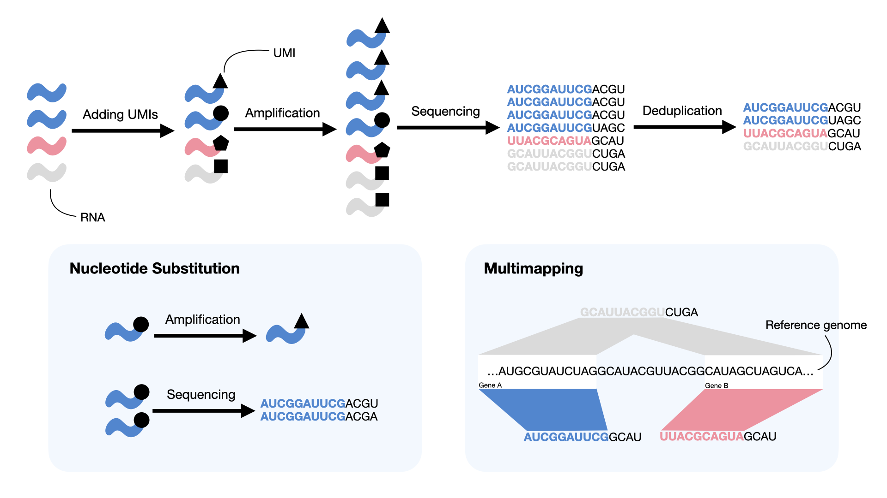
图3.15 UMI 通过追踪原始分子来减少 PCR 扩增偏差，但可能受到不同类型错误（蓝色方框）的影响。UMI 标签中的核苷酸替换可能在扩增或测序过程中发生。当共享同一 UMI 的读段被映射到不同基因（蓝色和红色）时、当单条读段映射到多个基因（灰色）时，或两种情况同时发生时，就会出现多重映射。#
3.5.1. UMI 解析的必要性#
在理想情况下，正确（未发生改变）的 UMI 标记着读段，每个 UMI 的读段都唯一地映射到同一个参考基因，并且 UMI 与 PCR 前分子之间存在一一对应关系。因此，UMI 去重过程在概念上非常简单：一个 UMI 的读段就是来自单个 PCR 前分子的 PCR 重复。每个基因被捕获并测序的分子数量，就是该基因所观测到的不同 UMI 的数量。
然而，实践中遇到的问题使得上述简单规则通常不足以确定 UMI 的基因来源，因而需要开发更复杂的模型（图3.15):
UMIs 中的错误：当读段中被测序的 UMI 标签包含 PCR 或测序过程中引入的错误时，就会出现这种情况。常见的 UMI 错误包括 PCR 过程中的核苷酸替换和测序过程中的读取错误。若不处理这类 UMI 错误，会使估计的分子数量虚高 [Smith et al., 2017, Ziegenhain et al., 2022].
Multimapping：当一条读段或一个 UMI 属于多个参考时（例如多基因读段/UMI），就会出现这一问题。它发生在：一个 UMI 的不同读段映射到不同基因、一条读段映射到多个基因，或两者同时发生时。该问题的后果是，多基因读段/UMI 的基因来源含糊不清，从而导致这些基因被采样的 PCR 前分子计数存在不确定性。简单地丢弃多基因读段/UMI，可能导致数据丢失，或在那些容易产生多重映射读段的基因（例如序列相似的基因家族）中造成有偏的估计 [Srivastava et al., 2019].
关于 UMI 错误的说明
UMI 错误，尤其是由核苷酸替换和误识别（miscalling）导致的错误，在单细胞实验中普遍存在。Smith et al. [2017] 的研究确立：在所测试的单细胞实验中，观测到的 UMI 序列之间平均相差的碱基数（编辑距离）低于随机抽样的 UMI 序列，而且低编辑距离的富集程度与 PCR 扩增程度高度相关。多重映射在单细胞数据中同样存在，并且取决于所考虑的基因，其发生率可能不容忽视。Srivastava et al. [2019] 的研究表明，丢弃多重映射的读段会使预测的分子计数产生负向偏差。
还有一些我们在此不重点讨论的其他挑战，例如“汇聚型（convergent）”和“发散型（divergent）”UMI 碰撞。我们把这样一种情形视为汇聚型碰撞：同一个 UMI 被用来标记同一细胞中、来自同一基因的两个不同的 PCR 前分子。当两个或更多不同的 UMI 来自同一个 PCR 前分子时（例如由于从该分子上采样了多个引物结合位点），我们称之为发散型碰撞。我们预计汇聚型 UMI 碰撞较为罕见，因此其影响通常很小。此外，转录本层面的映射信息有时可用于解决此类碰撞 [Srivastava et al., 2019]。发散型 UMI 碰撞主要发生在未剪接转录本的内含子之间 [10x Genomics, 2021]，针对它们所带来问题的处理方法，是一个活跃的研究领域 [Gorin and Pachter, 2021, 10x Genomics, 2021].
鉴于 UMI 在高通量 scRNA-seq 方案中的使用几乎无处不在，且解决这些错误能够改善基因丰度的估计，近期文献对 UMI 解析问题给予了大量关注 [Bose et al., 2015, He et al., 2022, Islam et al., 2013, Kaminow et al., 2021, Macosko et al., 2015, Melsted et al., 2021, Orabi et al., 2018, Parekh et al., 2018, Smith et al., 2017, Srivastava et al., 2019, Tsagiopoulou et al., 2021].
基于图的 UMI 解析
基于图的 UMI 解析
由于在尝试解析 UMI 时会出现上述问题，人们开发了许多方法来应对 UMI 解析问题。尽管 UMI 解析有众多不同的方法，但我们将聚焦于一个用于表示问题实例的框架，它修改自最初由以下作者提出的框架： Smith et al. [2017],它依赖于一个概念 UMI 图。该图的每个连通分量代表一个子问题，其中某些 UMI 子集会被合并（即被解析为同一个 PCR 前分子的证据）。许多流行的 UMI 解析方法都可以在这一框架下解释，只需精确地修改图是如何被细化的，以及在该图上执行的合并或解析过程是如何运作的。
在单细胞数据中，一个UMI图 \(G(V,E)\) 是一个 有向图，其节点集为 \(V\)，边集为 \(E\)。每个节点 \(v_i \in V\) 表示读段的一个等价类（EC），而边集 \(E\) 则编码各等价类（EC）之间的关系。该等价关系 \(\sim_r\) 定义在读段之上，依据的是它们的 UMI 和映射信息。我们说，两条读段 \(r_x\) 和 \(r_y\) 是等价的，即 \(r_x \sim_r r_y\)，当且仅当它们具有相同的 UMI 标签并映射到同一组参考。UMI 解析方法可以把“参考”定义为一个基因组位点 [Smith et al., 2017], transcript [He et al., 2022, Srivastava et al., 2019] 或基因 [Kaminow et al., 2021, Zheng et al., 2017].
在 UMI 图框架中，一种 UMI 解析方法可以分为三个主要步骤： 定义节点, 定义邻接关系, and 解析连通分量。这些步骤中的每一步都有不同的可选项，不同的方法可以将它们模块化地组合起来。此外，在这些步骤之前（和/或之后），有时还会有过滤步骤，用于丢弃或启发式地分配（通过修改所报告的参考映射集合）那些表现出某些类型映射歧义的读段和 UMI。
定义节点
如上文所述，节点 \(v_i \in V\) 是读段的一个等价类。因此， \(V\) 可以基于完整或过滤后的一组已映射读段及其相关的 未校正 UMIs. 所有读段只要满足等价关系 \(\sim_r\) （依据其参考集和 UMI 标签），就被关联到同一个顶点 \(v \in V\)。如果一个 EC 的 UMI 是多基因 UMI，那么这个 EC 就是多基因 EC。一些方法会在创建节点之前，通过过滤或启发式地分配读段来避免产生此类 EC；而另一些方法则会保留并处理这些含糊的顶点，尝试通过简约法、概率分配，或依据某种相关规则或模型来确定其基因来源 [He et al., 2022, Kaminow et al., 2021, Srivastava et al., 2019].
定义邻接关系
在创建 UMI 图的节点集 \(V\) 之后，节点在 \(V\) 中的邻接关系，取决于它们的 UMI 序列之间（以及可选的、其相关参考集的内容之间）的距离，该距离通常为汉明距离或编辑距离。
在此定义节点上的以下函数 \(v_i \in V\):
\(u(v_i)\) 是 UMI 标记 \(v_i\).
\(c(v_i) = |v_i|\) 是 \(v_i\)的基数，即与 \(v_i\) 等价的读段数量，等价关系为 \(\sim_r\).
\(m(v_i)\) 是编码在映射信息中的参考集，用于 \(v_i\).
\(D(v_i, v_j)\) 是 \(u(v_i)\) 和 \(u(v_j)\) 之间的距离，其中 \(v_j \in V\)。
给定这些函数定义，任意两个节点 \(v_i, v_j \in V\) 当且仅当 \(m(v_i) \cap m(v_j) \ne \emptyset\) 且 \(D(v_i,v_j) \le \theta\) 时，会由一条双向边相连，其中 \(\theta\) 是距离阈值，通常设为 \(\theta=1\) [Kaminow et al., 2021, Smith et al., 2017, Srivastava et al., 2019]。此外，如果 \(c(v_i) \ge 2c(v_j) -1\)，则这条双向边可以替换为从 \(v_i\) 指向 \(v_j\) 的有向边；反向情形同理 [Smith et al., 2017, Srivastava et al., 2019]。尽管上述边定义最常见，也可以采用其他定义，只要它们完全由 \(u\)、\(c\)、\(m\) 和 \(D\) 函数给出。在确定 \(V\) 和 \(E\) 后，UMI 图 \(G = (V,E)\) 就定义好了。
定义图解析方法
在给定 UMI 图之后，可以采用许多不同的解析方法。一种解析方法可以简单到只是寻找连通分量集合、对图进行聚类、贪婪地合并节点或收缩边 [Smith et al., 2017]，也可以是按照某些规则、用特定结构来搜索图的一个覆盖（例如单色树形图，monochromatic arborescences [Srivastava et al., 2019]）以化简该图。这样一来，化简后 UMI 图中的每个节点（或者在图未被动态修改的情况下，覆盖中的每个元素）都代表一个 PCR 前分子。被合并的节点或覆盖集合，则被视为该分子的 PCR 重复。
定义邻接关系的不同规则，以及图解析本身的不同方法，可以分别力求保持不同的性质，并由此定义出种类繁多、各不相同的整体 UMI 解析方法。对于以概率方式解决多重映射所致歧义的方法，解析后的 UMI 图可能仍包含多基因等价类（EC），其基因来源将在下一步中确定。
其他 UMI 解析方法也存在，例如无参考模型 [Tsagiopoulou et al., 2021] 以及矩量法（method of moments） [Melsted et al., 2021]但是，它们可能不容易在本框架中得到体现，在此没有进行更详细的讨论。
3.5.1.1. 量化#
UMI 解析的最后一步，是利用解析后的 UMI 图对每个基因的丰度进行定量。对于丢弃多基因 EC 的方法，当前所处理细胞中各基因的分子计数向量（简称计数向量），是通过统计标注有各基因的 EC 数量而得到的。另一方面，那些处理（而非丢弃）多基因 EC 的方法，通常会通过应用某种统计推断过程来消解歧义。例如， Srivastava et al. [2019] 引入了一种期望-最大化（EM）方法，用于以概率方式分配多基因 UMI；相关的 EM 算法也作为可选步骤被引入后续工具中 [He et al., 2022, Kaminow et al., 2021, Melsted et al., 2021]。在该模型中，被合并 EC 到基因的分配是隐变量，而各基因去重后的分子计数则是主要参数。直观地说，来自单基因 EC 的证据将被用来帮助以概率方式分摊多基因 EC。EM 算法寻找的是这样一组参数：它们共同生成所观测到的 EC 的（局部）似然最高。
通常，上述 UMI 解析和定量过程会针对每个细胞（以一个校正后的 CB 表示）分别进行，从而为所有细胞中的所有基因构建一个完整的计数矩阵。然而，高通量单细胞样本中每个细胞所含信息相对匮乏，限制了进行 UMI 解析时可用的证据，进而限制了上述统计推断过程这类基于模型方案的潜在效力。
3.6. 计数矩阵质量控制#
一旦生成了计数矩阵，进行质量控制（QC）评估就很重要。一般归在质量控制名下的评估有好几种。人们通常会记录并报告一些基本的全局指标，以帮助评估测序测量本身的整体质量。这些指标包括：比对上读段的总比例、每个细胞观测到的不同 UMI 的分布、UMI 去重率的分布、每个细胞检测到的基因数的分布，等等。这些以及类似的指标，往往由定量工具本身记录下来 [He et al., 2022, Kaminow et al., 2021, Melsted et al., 2021, Zheng et al., 2017] 因为它们是自然产生的，可以在读段映射、细胞条形码校正和 UMI 解析过程中计算出来。同样，也有一些工具可以帮助组织并可视化这些基本指标，例如： Loupe 浏览器, alevinQC, or a kb_python 报告，具体取决于所使用的定量流程。除了这些基本的全局指标之外，在分析的这一阶段，QC 指标的设计主要是为了帮助判断哪些细胞（CB）被“成功”测序，以及哪些细胞表现出需要过滤或校正的伪影。
在下面的折叠部分中，我们讨论一个示例 alevinQC 报告，取自 alevinQC 手册网页.
一旦 alevin 或 alevin-fry 完成单细胞数据的定量后，数据质量便可通过 R 包评估 alevinQC。alevinQC 报告可以生成为 PDF 格式或 R/Shiny 应用，它汇总了单细胞文库的各个组成部分，例如读段、CB 和 UMI。
1. 元数据和总表
{kind=link}
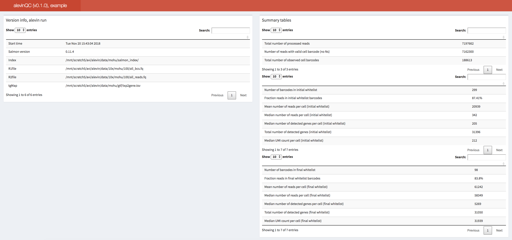
图3.16 alevinQC报告摘要一节的例子。#
alevinQC报告第一节显示输入文件和处理结果的汇总，其中左上方表格显示由 alevin (或 alevin-fry）所提供的、用于量化结果的元数据。例如，这包括运行时间、工具版本，以及输入 FASTQ 和索引文件的路径。右上方的汇总表则给出单细胞文库各组成部分的汇总统计，例如测序读段数、在不同过滤层级下被选中的细胞条形码数，以及去重后 UMI 的总数。
2. 拐点图与初始白名单的确定
{kind=link}
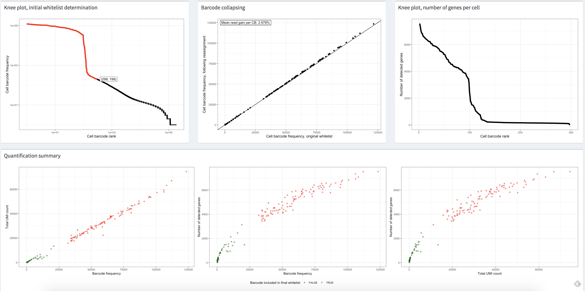
图3.17 该图展示了一个单细胞数据集示例在 alevinQC 报告中的若干图，其中的细胞是用“拐点（knee）”查找方法过滤的。每个点代表一个校正后的细胞条形码及其校正后的特征。#
第一个(左上)视图 图3.17 显示细胞条形码频率按降序排列的分布。在上面所有图中，每个点都代表一个校正后的细胞条形码，其 x 坐标对应该条形码的频率排名。在左上图中，y 坐标对应校正后条形码的观测频率。通常，这张图会呈现出类似“拐点（knee）”的形态，可用于识别高质量条形码的初始列表。图中的红点代表在采用基于“拐点”的过滤时，被选为高质量的细胞条形码。换句话说，这些细胞条形码含有足够数量的读段，可被认定为高质量，并且很可能来自真实存在的细胞。假设在 CB 校正步骤中传入了一个外部白名单——这意味着没有使用内部算法来区分高质量的细胞条形码——那么图中所有点都会被着成红色，因为所有这些校正后的细胞条形码都会经过整个原始数据处理流程，并被报告在基因计数矩阵中。如果所有细胞条形码的频率都始终偏低，就应当对数据质量持怀疑态度。
3. 条形码合并（collapsing）
在通过内部阈值(例如，从“拐点”方法)或通过外部白名单确定将要处理的条形码之后, alevin (或 alevin-fry）会执行细胞条形码序列校正。条形码合并图，即 图3.17 中上方中间的图，显示了细胞条形码在序列校正之后相比校正之前所分配到的读段数量。一般来说，我们会看到所有点都接近于代表 \(x = y\)的直线，这意味着 CB 校正中的重新分配通常不会大幅改变细胞条形码的分布特征。
4. 拐点图：每个细胞的基因数
右上角图 图3.17 显示所有已处理的细胞条形码的观测基因数量分布。一般来说，平均 \(2,000\) 每个细胞的基因被认为不多，但对于下游分析来说是合理的。如果所有细胞的观测基因数量都很少，那么应当对数据的质量进行双重检查。
5. 定量摘要
最后，一系列量化概要图，即 图3.17，使用散点图比较细胞条形码频率、去重后 UMI 总数，以及非零基因总数。一般来说，每张图中所绘的数据都应呈现正相关；如果进行了高质量过滤（例如拐点过滤），高质量的细胞条形码应当与其余条形码明显分开。此外，我们应当预期这三张图传达出相似的趋势。如果使用外部白名单，则图中所有点都会被着成红色，因为所有这些细胞条形码都会被处理并报告在基因计数矩阵中。即便如此，我们仍应看到各图之间的相关性，以及代表高质量细胞的点与其他点之间的分离。如果所有这些指标在各细胞间都始终偏低，或者这些图传达出截然不同的趋势，那么就应当对数据质量感到担忧。
3.6.1. 空液滴检测#
最早的 QC 步骤之一，是确定哪些细胞条形码对应于“高置信”的已测序细胞。在基于液滴的方案中，常会出现这样的情况 [Macosko et al., 2015] ：某些条形码关联的是环境 RNA，而不是某个被捕获细胞的 RNA。这种情况发生在液滴未能捕获到细胞时。这些空液滴仍然往往会产生测序读段，尽管这些读段的特征与对应于正常捕获细胞的条形码所关联的读段明显不同。已有许多方法可用于评估某个条形码是否可能对应于空液滴。一种简单的方法是检查条形码的累积频率图，其中条形码按其关联的不同 UMI 数降序排列。这张图往往包含一个“拐点（knee）”，可作为区分正常捕获细胞与空液滴的可能分界点 [He et al., 2022, Smith et al., 2017]。虽然这种“拐点”方法直观，且常常能估计出一个合理的阈值，但它也有若干缺点。例如，并非所有累积直方图都呈现明显的拐点，而且众所周知，很难设计出能够稳健且自动地检测此类拐点的算法。最后，与某个条形码关联的 UMI 总计数，单凭其本身可能并不是判断该条形码是否对应空液滴或受损细胞的最佳信号。
这导致开发了若干专门用来检测空的或受损的液滴或一般认为“质量低”的细胞的工具。[Alvarez et al., 2020, Heiser et al., 2021, Hippen et al., 2021, Lun et al., 2019, Muskovic and Powell, 2021, Young and Behjati, 2020]。这些工具纳入了各种不同的细胞质量度量，包括不同 UMI 的频率、检测到的基因数，以及线粒体 RNA 的比例，通常通过对这些特征应用统计模型，将高质量细胞与推定的空液滴或受损细胞区分开来。这意味着通常可以对细胞打分，并根据“细胞并非空液滴或受损”的估计后验概率来确定最终的过滤。虽然这些模型通常对单细胞 RNA-seq 数据上往往效果良好，但可能需要额外应用若干过滤步骤或启发式方法，才能稳健地过滤单核 RNA-seq 数据 [He et al., 2022, Kaminow et al., 2021]，例如 emptyDropsCellRanger 函数所提供的那些，该函数来自 DropletUtils [Lun et al., 2019].
3.6.2. 双细胞检测#
除了判断哪些细胞条形码对应空液滴或受损细胞之外，人们可能还希望识别那些对应双细胞（doublet）或多细胞（multiplet）的细胞条形码。当某个液滴捕获了两个（双细胞）或更多（多细胞）细胞时，会导致这些细胞条形码在诸如所代表的读段数和 UMI 数，以及所呈现的基因表达谱等方面出现偏斜的分布。人们也开发了许多工具来预测细胞条形码的双细胞状态 [Bais and Kostka, 2019, Bernstein et al., 2020, DePasquale et al., 2019, McGinnis et al., 2019, Wolock et al., 2019]。一旦检测出来，被判定为很可能是双细胞或多细胞的细胞，便可在后续分析中被移除或加以其他校正。
3.7. 计数数据表示#
在完成初始的原始数据处理与质量控制、进而转入后续分析时，必须承认并牢记：细胞×基因计数矩阵充其量只是对原始样本中所测序分子的一种近似。在原始数据处理流程的若干阶段，都应用了启发式策略并做了简化，才得以生成这个计数矩阵。例如，读段映射并不完美，细胞条形码校正也是如此。准确解析 UMI 尤其困难，而与多重映射读段相关联的 UMI 问题也常常被忽视。此外，多个引物结合位点（尤其是在未剪接分子中）可能会破坏通常假定的“一个分子对应一个 UMI”的关系。
3.8. 简要讨论#
为结束本章，我们转达了最近围绕上述一些共同预处理工具进行的基准和审查研究所产生的一些意见和建议。[Brüning et al., 2022, You et al., 2021]。当然，需要指出的是，单细胞与单核 RNA-seq 原始数据处理方法和工具的开发，以及对这些方法的持续评估，是一项持续进行的社区性工作。因此，在进行自己的分析时，尝试几种不同的工具往往是有益且合理的。
在最粗的层面上，最常见的工具都能稳健而准确地处理数据。有观点认为，对于许多常见的下游分析（例如聚类）及其所用的方法而言，预处理工具的选择通常比分析流程中的其他步骤影响更小 [You et al., 2021]。尽管如此，人们也观察到，将轻量级映射限制在剪接转录组上，会增大产生虚假映射以及虚假基因表达的可能性 [Brüning et al., 2022].
归根结底，选择哪种具体工具，在很大程度上取决于手头的任务以及可用计算资源的限制。如果进行的是标准的单细胞分析，基于轻量级映射的方法是一个不错的选择，因为它们比现有的基于比对的工具更快（往往快得多），也更省内存。如果进行的是单核 RNA-seq 分析， alevin-fry 尤其是一个有吸引力的选择，因为它依然省内存，而且即使把转录组参考扩展到包含未剪接的参考序列，其索引仍然相对较小。另一方面，当“恢复映射到（扩展）转录组之外的读段”很重要，或当下游分析需要基因组映射位点时，则建议采用基于比对的方法。这对于诸如使用以下工具进行差异转录本使用（differential transcript usage）分析之类的任务尤为相关： sierra [Patrick et al., 2020]。在基于比对的分析流程中，根据 Brüning et al. [2022], STARsolo 应优于 Cell Ranger 因为前者比后者快得多，需要较少的内存，同时它也能够产生几乎相同的结果。
3.9. 一个现实世界的例子#
鉴于我们已经包括了各种原始数据处理方法的基本概念，我们现在将注意力转向展示一种具体工具(在这种情况下, alevin-fry)可用于处理一个小示例数据集。首先，我们需要从单细胞实验读取序列 FASTQ 格式 以及读段将要映射到的参考（例如转录组）。通常，一个参考会包含所测序物种的基因组序列及其对应的基因注释，二者分别采用 FASTA 和 GTF 格式。
在这个例子中，我们将使用 染色体5 人类基因组及其相关基因注释作为参考——它是人类参考的一个子集，即 GRCh38 (GENCODE v32/Ensembl 98) 参考资料，取自 10x Genomics 的参考构建。相应地，我们提取出能映射到所生成参考的读段子集，其数据来源是一个 人类脑瘤数据集 （来自 10x Genomics）。
Alevin-fry [He et al., 2022] 是一款快速、准确且省内存的单细胞与单核数据处理工具。Simpleaf 是一个用 rust编写的程序，它提供了一个统一、简化的接口，用于借助 alevin-fry 流程来处理一些最常见的实验方案和数据类型。一个基于 nextflow 的 工作流程 工具，用于处理大量的单细胞数据集。在此，我们将首先展示如何使用两个 simpleaf 命令来处理单细胞原始数据。随后，我们会描述完整的一套 salmon alevin 和 alevin-fry 命令，而这些 simpleaf 命令正与之对应；这样做是为了勾勒出本节所述步骤发生的位置，并说明可能的不同处理选项。这些命令将在命令行中运行，而 conda 用于安装运行此示例所需的所有软件。
3.9.1. 准备#
在开始前，我们在终端中创建Conda环境，并安装所需的软件包。Simpleaf 取决于 alevin-fry, salmon 和 pyroe。他们都可以在 bioconda 自动安装 simpleaf.
conda create -n af -y -c bioconda simpleaf
conda activate af
关于使用苹果硅基设备的说明
Conda 目前不会为 Apple silicon 原生构建大多数软件包。因此，如果你使用的是非 Intel 架构的 Apple 电脑（例如搭载 M1（Pro/Max/Ultra）或 M2 芯片的机器），需要确保环境使用 Rosetta2 转换层。为此，可以将上面的命令替换为以下命令（说明改编自 这份指南）：
CONDA_SUBDIR=osx-64 conda create -n af -y -c bioconda simpleaf # create a new environment
conda activate af
conda env config vars set CONDA_SUBDIR=osx-64 # subsequent commands use intel packages
接下来，我们创建一个工作目录, af_xmpl_run,从远程主机下载并解压缩示例数据集。
# Create a working dir and go to the working directory
## The && operator helps execute two commands using a single line of code.
mkdir af_xmpl_run && cd af_xmpl_run
# Fetch the example dataset and CB permit list and decompress them
## The pipe operator (|) passes the output of the wget command to the tar command.
## The dash operator (-) after `tar xzf` captures the output of the first command.
## - example dataset
wget -qO- https://umd.box.com/shared/static/lx2xownlrhz3us8496tyu9c4dgade814.gz | tar xzf - --strip-components=1 -C .
## The fetched folder containing the fastq files is called toy_read_fastq.
fastq_dir="toy_read_fastq"
## The fetched folder containing the human ref files is called toy_human_ref.
ref_dir="toy_human_ref"
# Fetch CB permit list
## the right chevron (>) redirects the STDOUT to a file.
wget -qO- https://github.com/f0t1h/3M-february-2018/raw/master/3M-february-2018.txt.gz | gunzip - > 3M-february-2018.txt
随着参考文件(基因组FASTA文件和基因注释GTF文件)和读取记录(FASTQ文件)的准备，我们现在可以应用上面讨论的原始数据处理分析流程生成基因计数矩阵。
3.9.2. 简化的原始数据处理分析流程#
Simpleaf 旨在简化 alevin-fry 用于单细胞和单核原始数据处理的接口。它将整个处理流程封装为两个步骤：
simpleaf index为所提供的参考建立索引，或构建一个 splici 参考（剪接转录本+ i内含子）并为其建立索引。simpleaf quant将测序读段映射到已建立索引的参考上，并对映射记录进行量化，从而生成基因计数矩阵。
关于使用 simpleaf 进行映射的更多高级用法和选项，可参见 文档。
运行时 simpleaf index,如果基因组FASTA文件(-f)和一个基因注释GTF文件(-g将产生 splici 参考并为其建立索引；如果只提供了转录组 FASTA 文件（--refseq,它会直接索引它。目前，我们建议: splici 索引。
# simpleaf needs the environment variable ALEVIN_FRY_HOME to store configuration and data.
# For example, the paths to the underlying programs it uses and the CB permit list
mkdir alevin_fry_home && export ALEVIN_FRY_HOME='alevin_fry_home'
# the simpleaf set-paths command finds the path to the required tools and writes a configuration JSON file in the ALEVIN_FRY_HOME folder.
simpleaf set-paths
# simpleaf index
# Usage: simpleaf index -o out_dir [-f genome_fasta -g gene_annotation_GTF|--refseq transcriptome_fasta] -r read_length -t number_of_threads
## The -r read_lengh is the number of sequencing cycles performed by the sequencer to generate biological reads (read2 in Illumina).
## Publicly available datasets usually have the read length in the description. Sometimes they are called the number of cycles.
simpleaf index \
-o simpleaf_index \
-f toy_human_ref/fasta/genome.fa \
-g toy_human_ref/genes/genes.gtf \
-r 90 \
-t 8
在输出目录中 simpleaf_index, the ref 文件夹包含 splici 参考; index 文件夹中包含基于 splici 参考。
接下来 simpleaf quant，它会读入一个索引目录以及映射记录 FASTQ 文件，从而生成基因计数矩阵。该命令囊括了本节讨论的所有主要步骤，包括映射、细胞条形码校正以及 UMI 解析。
# Collecting sequencing read files
## The reads1 and reads2 variables are defined by finding the filenames with the pattern "_R1_" and "_R2_" from the toy_read_fastq directory.
reads1_pat="_R1_"
reads2_pat="_R2_"
## The read files must be sorted and separated by a comma.
### The find command finds the files in the fastq_dir with the name pattern
### The sort command sorts the file names
### The awk command and the paste command together convert the file names into a comma-separated string.
reads1="$(find -L ${fastq_dir} -name "*$reads1_pat*" -type f | sort | awk -v OFS=, '{$1=$1;print}' | paste -sd,)"
reads2="$(find -L ${fastq_dir} -name "*$reads2_pat*" -type f | sort | awk -v OFS=, '{$1=$1;print}' | paste -sd,)"
# simpleaf quant
## Usage: simpleaf quant -c chemistry -t threads -1 reads1 -2 reads2 -i index -u [unspliced permit list] -r resolution -m t2g_3col -o output_dir
simpleaf quant \
-c 10xv3 -t 8 \
-1 $reads1 -2 $reads2 \
-i simpleaf_index/index \
-u -r cr-like \
-m simpleaf_index/index/t2g_3col.tsv \
-o simpleaf_quant
运行这些命令后，可以在 simpleaf_quant/af_quant/alevin 文件夹。在这个目录中，有三个文件: quants_mat.mtx, quants_mat_cols.txt, and quants_mat_rows.txt，它们分别对应于计数矩阵、该矩阵每一列的基因名称，以及该矩阵每一行经校正、过滤后的细胞条形码。这些文件的末尾几行如下所示。这里值得注意的是， alevin-fry 是以 USA 模式（即unspliced（未剪接）、spliced（剪接），以及 a歧义模式，ambiguous mode）运行的，因此对每个基因的剪接（spliced）状态和未剪接（unspliced）状态都进行了定量——由此得到的 quants_mat_cols.txt 文件的行数将等于注释基因数的 3 倍，分别对应于每个基因的剪接（S）、未剪接（U）和剪接歧义（A）这几种变体所使用的名称。
# Each line in `quants_mat.mtx` represents
# a non-zero entry in the format row column entry
$ tail -3 simpleaf_quant/af_quant/alevin/quants_mat.mtx
138 58 1
139 9 1
139 37 1
# Each line in `quants_mat_cols.txt` is a splice status
# of a gene in the format (gene name)-(splice status)
$ tail -3 simpleaf_quant/af_quant/alevin/quants_mat_cols.txt
ENSG00000120705-A
ENSG00000198961-A
ENSG00000245526-A
# Each line in `quants_mat_rows.txt` is a corrected
# (and, potentially, filtered) cell barcode
$ tail -3 simpleaf_quant/af_quant/alevin/quants_mat_rows.txt
TTCGATTTCTGAATCG
TGCTCGTGTTCGAAGG
ACTGTGAAGAAATTGC
我们可以将计数矩阵作为一个 AnnData 使用 load_fry 函数从 pyroe。类似功能, loadFry,已在 fishpond R 包中。
import pyroe
quant_dir = 'simpleaf_quant/af_quant'
adata_sa = pyroe.load_fry(quant_dir)
默认行为会把 X 层（即 Anndata 对象中的该层）加载为每个基因的剪接计数与歧义计数之和。然而，近期的研究 [Pool et al., 2022] 和 最新做法 表明，即使在单细胞 RNA-seq 数据中，纳入内含子计数也可能提高灵敏度并有利于下游分析。尽管如何最好地利用这一信息仍是正在进行的研究课题，但由于 alevin-fry 会自动对每个样本中的剪接、未剪接和歧义读段进行定量，因此包含每个基因总计数的计数矩阵可以简单地按如下方式获得：
import pyroe
quant_dir = 'simpleaf_quant/af_quant'
adata_usa = pyroe.load_fry(quant_dir, output_format={'X' : ['U','S','A']})
3.9.3. 完整的Alevin-fry分析流程#
Simpleaf 使得只需几条命令就能以“标准”方式处理单细胞原始数据。接下来，我们将展示如何通过显式调用 pyroe, salmon, and alevin-fry 命令来生成完全相同的定量结果。除了教学价值之外，了解每一步的确切命令还有一个好处：当只需要重新运行流程的一部分，或需要指定某些当前未由 simpleaf 需要说明。
请注意: 准备 一节应事先执行。在以下命令中调用的所有工具， pyroe, salmon, and alevin-fry,安装时已安装 simpleaf.
3.9.3.1. 构建索引#
首先，我们处理基因组 FASTA 文件和基因注释 GTF 文件，以获得 splici 索引。以下代码块中的命令类似于 simpleaf index 上面讨论的指令。这包括两个步骤:
建设 splici 参考（剪接转录本+ i内含子）通过调用
pyroe make-splici,使用基因组和基因注释文件编制索引 splici 调用
salmon index
# make splici reference
## Usage: pyroe make-splici genome_file gtf_file read_length out_dir
## The read_lengh is the number of sequencing cycles performed by the sequencer. Ask your technician if you are not sure about it.
## Publicly available datasets usually have the read length in the description.
pyroe make-splici \
${ref_dir}/fasta/genome.fa \
${ref_dir}/genes/genes.gtf \
90 \
splici_rl90_ref
# Index the reference
## Usage: salmon index -t extend_txome.fa -i idx_out_dir -p num_threads
## The $() expression runs the command inside and puts the output in place.
## Please ensure that only one file ends with ".fa" in the `splici_ref` folder.
salmon index \
-t $(ls splici_rl90_ref/*\.fa) \
-i salmon_index \
-p 8
splici 索引可见于 salmon_index 目录。
3.9.3.2. 映射与定量#
接下来，我们将把记录下来的测序读段映射到 splici 索引，方法是调用 salmon alevin。这将生成一个输出文件夹，名为 salmon_alevin，其中包含使用以下工具处理已映射读段所需的全部信息： alevin-fry.
# Collect FASTQ files
## The filenames are sorted and separated by space.
reads1="$(find -L $fastq_dir -name "*$reads1_pat*" -type f | sort | awk '{$1=$1;print}' | paste -sd' ')"
reads2="$(find -L $fastq_dir -name "*$reads2_pat*" -type f | sort | awk '{$1=$1;print}' | paste -sd' ')"
# Mapping
## Usage: salmon alevin -i index_dir -l library_type -1 reads1_files -2 reads2_files -p num_threads -o output_dir
## The variable reads1 and reads2 defined above are passed in using ${}.
salmon alevin \
-i salmon_index \
-l ISR \
-1 ${reads1} \
-2 ${reads2} \
-p 8 \
-o salmon_alevin \
--chromiumV3 \
--sketch
然后，我们使用以下工具执行细胞条形码校正和 UMI 解析步骤： alevin-fry。该过程包含三个 alevin-fry 命令：
The
generate-permit-list命令用于细胞条形码校正。The
collate命令会过滤掉无效的映射记录、校正细胞条形码，并整理来自同一校正后细胞条形码的映射记录。The
quant命令执行 UMI 解析与定量。
# Cell barcode correction
## Usage: alevin-fry generate-permit-list -u CB_permit_list -d expected_orientation -o gpl_out_dir
## Here, the reads that map to the reverse complement strand of transcripts are filtered out by specifying `-d fw`.
alevin-fry generate-permit-list \
-u 3M-february-2018.txt \
-d fw \
-i salmon_alevin \
-o alevin_fry_gpl
# Filter mapping information
## Usage: alevin-fry collate -i gpl_out_dir -r alevin_map_dir -t num_threads
alevin-fry collate \
-i alevin_fry_gpl \
-r salmon_alevin \
-t 8
# UMI resolution + quantification
## Usage: alevin-fry quant -r resolution -m txp_to_gene_mapping -i gpl_out_dir -o quant_out_dir -t num_threads
## The file ends with `3col.tsv` in the splici_ref folder will be passed to the -m argument.
## Please ensure that there is only one such file in the `splici_ref` folder.
alevin-fry quant -r cr-like \
-m $(ls splici_rl90_ref/*3col.tsv) \
-i alevin_fry_gpl \
-o alevin_fry_quant \
-t 8
运行这些命令后，可以在下列文件中找到由此产生的量化信息: alevin_fry_quant/alevin。有关映射、CB 校正和 UMI 解析各步骤的其他相关信息，可分别在 salmon_alevin, alevin_fry_gpl, and alevin_fry_quant 文件夹。
在此处举的例子中，我们用 simpleaf 和 alevin-fry 用于处理 10x Chromium 3 ' v3 数据集。Alevin-fry 和 simpleaf 为处理不同的单细胞方案提供许多其他选项，包括但不限于Dropseq [Macosko et al., 2015], sci-RNA-seq3 [Cao et al., 2019] 和其他10x Chromium平台。关于不同处理阶段的现有备选办法的更为全面的清单和说明，可见于 alevin-fry 和 simpleaf 文档。alevin-fry 还提供一个 nextflow的工作流，名为 quantaf,用于方便地从简单定义的样本表中处理许多样本。
当然，本节中引用和描述的许多其他原始数据处理工具也有类似的资源，包括: zUMIs [Parekh et al., 2018], alevin [Srivastava et al., 2019], kallisto|bustools [Melsted et al., 2021], STARsolo [Kaminow et al., 2021] 和 CellRanger.
此外，scrnaseq 流程来自 nf-core，还提供了一个基于 Nextflow 的流程，用于处理使用一系列不同试剂体系生成的单细胞 RNA-seq 数据，并整合了本节所述的若干工具。
3.10. 有用链接#
Alevin-fry 教程 为处理不同类型的数据提供教程。
Pyroe 在 Python 中 roe 在 R 中提供了辅助函数，用于处理 alevin-fry 量化信息。它们还提供了预处理数据集的接口。quantaf.
Quantaf 是一个基于 Nextflow 的工作流，属于 alevin-fry 根据输入表方便处理大量单细胞和单核数据的分析流程。公开的单细胞数据集的预处理量化信息载于其 网页.
Simpleaf 是 alevin-fry 工作流的一个封装，只需两条命令即可执行整个流程——从构建 splici 参考，到如上例所示的定量。
以下教程介绍如何处理来自 Galaxy 项目 的数据：教程1 和 教程2。
用于解释和评估 FastQC 报告的教程，可在以下来源获取： MSU, HBC 培训项目, Galaxy培训 和 QC 失败网站.
3.11. 参考文献#
Marcus Alvarez, Elior Rahmani, Brandon Jew, Kristina M. Garske, Zong Miao, Jihane N. Benhammou, Chun Jimmie Ye, Joseph R. Pisegna, Kirsi H. Pietiläinen, Eran Halperin, and Päivi Pajukanta. Enhancing droplet-based single-nucleus RNA-seq resolution using the semi-supervised machine learning classifier DIEM. Scientific Reports, July 2020. URL: https://doi.org/10.1038/s41598-020-67513-5, doi:10.1038/s41598-020-67513-5.
Abha S Bais and Dennis Kostka. Scds: computational annotation of doublets in single-cell RNA sequencing data. Bioinformatics, 36(4):1150–1158, September 2019. URL: https://doi.org/10.1093/bioinformatics/btz698, doi:10.1093/bioinformatics/btz698.
Nicholas J. Bernstein, Nicole L. Fong, Irene Lam, Margaret A. Roy, David G. Hendrickson, and David R. Kelley. Solo: Doublet Identification in Single-Cell RNA-Seq via Semi-Supervised Deep Learning. Cell Systems, 11(1):95–101.e5, July 2020. URL: https://doi.org/10.1016/j.cels.2020.05.010, doi:10.1016/j.cels.2020.05.010.
Sayantan Bose, Zhenmao Wan, Ambrose Carr, Abbas H. Rizvi, Gregory Vieira, Dana Pe'er, and Peter A. Sims. Scalable microfluidics for single-cell RNA printing and sequencing. Genome Biology, June 2015. URL: https://doi.org/10.1186/s13059-015-0684-3, doi:10.1186/s13059-015-0684-3.
Nicolas L Bray, Harold Pimentel, Páll Melsted, and Lior Pachter. Near-optimal probabilistic RNA-seq quantification. Nature biotechnology, 34(5):525–527, 2016.
Ralf Schulze Brüning, Lukas Tombor, Marcel H Schulz, Stefanie Dimmeler, and David John. Comparative analysis of common alignment tools for single-cell RNA sequencing. GigaScience, 2022.
Ralf Schulze Brüning, Lukas Tombor, Marcel H Schulz, Stefanie Dimmeler, and David John. Comparative analysis of common alignment tools for single-cell RNA sequencing. GigaScience, 2022. URL: https://doi.org/10.1093%2Fgigascience%2Fgiac001, doi:10.1093/gigascience/giac001.
Junyue Cao, Malte Spielmann, Xiaojie Qiu, Xingfan Huang, Daniel M. Ibrahim, Andrew J. Hill, Fan Zhang, Stefan Mundlos, Lena Christiansen, Frank J. Steemers, Cole Trapnell, and Jay Shendure. The single-cell transcriptional landscape of mammalian organogenesis. Nature, 566(7745):496–502, February 2019. URL: https://doi.org/10.1038/s41586-019-0969-x, doi:10.1038/s41586-019-0969-x.
Kun-Mao Chao, William R. Pearson, and Webb Miller. Aligning two sequences within a specified diagonal band. Bioinformatics, 8(5):481–487, 1992. URL: https://doi.org/10.1093/bioinformatics/8.5.481, doi:10.1093/bioinformatics/8.5.481.
Erica A.K. DePasquale, Daniel J. Schnell, Pieter-Jan Van Camp, Íñigo Valiente-Aland\'ı, Burns C. Blaxall, H. Leighton Grimes, Harinder Singh, and Nathan Salomonis. DoubletDecon: deconvoluting doublets from single-cell RNA-sequencing data. Cell Reports, 29(6):1718–1727.e8, November 2019. URL: https://doi.org/10.1016/j.celrep.2019.09.082, doi:10.1016/j.celrep.2019.09.082.
Alexander Dobin, Carrie A Davis, Felix Schlesinger, Jorg Drenkow, Chris Zaleski, Sonali Jha, Philippe Batut, Mark Chaisson, and Thomas R Gingeras. Star: ultrafast universal rna-seq aligner. Bioinformatics, 29(1):15–21, 2013.
Rick Farouni, Haig Djambazian, Lorenzo E Ferri, Jiannis Ragoussis, and Hamed S Najafabadi. Model-based analysis of sample index hopping reveals its widespread artifacts in multiplexed single-cell RNA-sequencing. Nature communications, 11(1):1–8, 2020.
Michael Farrar. Striped Smith–Waterman speeds database searches six times over other SIMD implementations. Bioinformatics, 23(2):156–161, 2007.
Gennady Gorin and Lior Pachter. Length Biases in Single-Cell RNA Sequencing of pre-mRNA. bioRxiv, 2021. URL: https://www.biorxiv.org/content/early/2021/07/31/2021.07.30.454514, arXiv:https://www.biorxiv.org/content/early/2021/07/31/2021.07.30.454514.full.pdf, doi:10.1101/2021.07.30.454514.
Dongze He, Mohsen Zakeri, Hirak Sarkar, Charlotte Soneson, Avi Srivastava, and Rob Patro. Alevin-fry unlocks rapid, accurate and memory-frugal quantification of single-cell RNA-seq data. Nature Methods, 19(3):316–322, 2022.
Cody N. Heiser, Victoria M. Wang, Bob Chen, Jacob J. Hughey, and Ken S. Lau. Automated quality control and cell identification of droplet-based single-cell data using dropkick. Genome Research, 31(10):1742–1752, April 2021. URL: https://doi.org/10.1101/gr.271908.120, doi:10.1101/gr.271908.120.
Ariel A Hippen, Matias M Falco, Lukas M Weber, Erdogan Pekcan Erkan, Kaiyang Zhang, Jennifer Anne Doherty, Anna Vähärautio, Casey S Greene, and Stephanie C Hicks. miQC: An adaptive probabilistic framework for quality control of single-cell RNA-sequencing data. PLoS computational biology, 17(8):e1009290, 2021.
Saiful Islam, Amit Zeisel, Simon Joost, Gioele La Manno, Pawel Zajac, Maria Kasper, Peter Lönnerberg, and Sten Linnarsson. Quantitative single-cell RNA-seq with unique molecular identifiers. Nature Methods, 11(2):163–166, December 2013. URL: https://doi.org/10.1038/nmeth.2772, doi:10.1038/nmeth.2772.
Benjamin Kaminow, Dinar Yunusov, and Alexander Dobin. STARsolo: accurate, fast and versatile mapping/quantification of single-cell and single-nucleus RNA-seq data. bioRxiv, 2021.
Heng Li. Minimap2: pairwise alignment for nucleotide sequences. Bioinformatics, 34(18):3094–3100, May 2018. URL: https://doi.org/10.1093/bioinformatics/bty191, doi:10.1093/bioinformatics/bty191.
Aaron TL Lun, Samantha Riesenfeld, Tallulah Andrews, Tomas Gomes, John C Marioni, and others. EmptyDrops: distinguishing cells from empty droplets in droplet-based single-cell RNA sequencing data. Genome biology, 20(1):1–9, 2019.
Evan Z. Macosko, Anindita Basu, Rahul Satija, James Nemesh, Karthik Shekhar, Melissa Goldman, Itay Tirosh, Allison R. Bialas, Nolan Kamitaki, Emily M. Martersteck, John J. Trombetta, David A. Weitz, Joshua R. Sanes, Alex K. Shalek, Aviv Regev, and Steven A. McCarroll. Highly parallel genome-wide expression profiling of individual cells using nanoliter droplets. Cell, 161(5):1202–1214, May 2015. URL: https://doi.org/10.1016/j.cell.2015.05.002, doi:10.1016/j.cell.2015.05.002.
Santiago Marco-Sola, Juan Carlos Moure, Miquel Moreto, and Antonio Espinosa. Fast gap-affine pairwise alignment using the wavefront algorithm. Bioinformatics, September 2020. URL: https://doi.org/10.1093/bioinformatics/btaa777, doi:10.1093/bioinformatics/btaa777.
Christopher S. McGinnis, Lyndsay M. Murrow, and Zev J. Gartner. DoubletFinder: doublet detection in single-cell RNA sequencing data using artificial nearest neighbors. Cell Systems, 8(4):329–337.e4, April 2019. URL: https://doi.org/10.1016/j.cels.2019.03.003, doi:10.1016/j.cels.2019.03.003.
Páll Melsted, A. Sina Booeshaghi, Lauren Liu, Fan Gao, Lambda Lu, Kyung Hoi Min, Eduardo da Veiga Beltrame, Kristján Eldjárn Hjörleifsson, Jase Gehring, and Lior Pachter. Modular, efficient and constant-memory single-cell rna-seq preprocessing. Nature Biotechnology, 39(7):813–818, April 2021. URL: https://doi.org/10.1038/s41587-021-00870-2, doi:10.1038/s41587-021-00870-2.
Walter Muskovic and Joseph E Powell. DropletQC: improved identification of empty droplets and damaged cells in single-cell RNA-seq data. Genome Biology, 22(1):1–9, 2021.
Stefan Niebler, André Müller, Thomas Hankeln, and Bertil Schmidt. RainDrop: Rapid activation matrix computation for droplet-based single-cell RNA-seq reads. BMC bioinformatics, 21(1):1–14, 2020.
Baraa Orabi, Emre Erhan, Brian McConeghy, Stanislav V Volik, Stephane Le Bihan, Robert Bell, Colin C Collins, Cedric Chauve, and Faraz Hach. Alignment-free clustering of UMI tagged DNA molecules. Bioinformatics, 35(11):1829–1836, October 2018. URL: https://doi.org/10.1093/bioinformatics/bty888, doi:10.1093/bioinformatics/bty888.
Swati Parekh, Christoph Ziegenhain, Beate Vieth, Wolfgang Enard, and Ines Hellmann. zUMIs - a fast and flexible pipeline to process RNA sequencing data with UMIs. GigaScience, May 2018. URL: https://doi.org/10.1093/gigascience/giy059, doi:10.1093/gigascience/giy059.
Ralph Patrick, David T. Humphreys, Vaibhao Janbandhu, Alicia Oshlack, Joshua W.K. Ho, Richard P. Harvey, and Kitty K. Lo. Sierra: discovery of differential transcript usage from polyA-captured single-cell RNA-seq data. Genome Biology, jul 2020. URL: https://doi.org/10.1186%2Fs13059-020-02071-7, doi:10.1186/s13059-020-02071-7.
Allan-Hermann Pool, Helen Poldsam, Sisi Chen, Matt Thomson, and Yuki Oka. Enhanced recovery of single-cell RNA-sequencing reads for missing gene expression data. bioRxiv, 2022. URL: https://www.biorxiv.org/content/early/2022/04/27/2022.04.26.489449, arXiv:https://www.biorxiv.org/content/early/2022/04/27/2022.04.26.489449.full.pdf, doi:10.1101/2022.04.26.489449.
Torbjørn Rognes and Erling Seeberg. Six-fold speed-up of Smith–Waterman sequence database searches using parallel processing on common microprocessors. Bioinformatics, 16(8):699–706, 2000.
Tom Smith, Andreas Heger, and Ian Sudbery. UMI-tools: modeling sequencing errors in Unique Molecular Identifiers to improve quantification accuracy. Genome research, 27(3):491–499, 2017.
Charlotte Soneson, Avi Srivastava, Rob Patro, and Michael B Stadler. Preprocessing choices affect RNA velocity results for droplet scRNA-seq data. PLoS computational biology, 17(1):e1008585, 2021.
Avi Srivastava, Laraib Malik, Hirak Sarkar, Mohsen Zakeri, Fatemeh Almodaresi, Charlotte Soneson, Michael I Love, Carl Kingsford, and Rob Patro. Alignment and mapping methodology influence transcript abundance estimation. Genome Biology, 21(1):1–29, 2020.
Avi Srivastava, Laraib Malik, Tom Smith, Ian Sudbery, and Rob Patro. Alevin efficiently estimates accurate gene abundances from dscRNA-seq data. Genome biology, 20(1):1–16, 2019.
Avi Srivastava, Hirak Sarkar, Nitish Gupta, and Rob Patro. Rapmap: a rapid, sensitive and accurate tool for mapping rna-seq reads to transcriptomes. Bioinformatics, 32(12):i192–i200, 2016.
Hajime Suzuki and Masahiro Kasahara. Introducing difference recurrence relations for faster semi-global alignment of long sequences. BMC Bioinformatics, February 2018. URL: https://doi.org/10.1186/s12859-018-2014-8, doi:10.1186/s12859-018-2014-8.
Maria Tsagiopoulou, Maria Christina Maniou, Nikolaos Pechlivanis, Anastasis Togkousidis, Michaela Kotrová, Tobias Hutzenlaub, Ilias Kappas, Anastasia Chatzidimitriou, and Fotis Psomopoulos. UMIc: a preprocessing method for UMI deduplication and reads correction. Frontiers in Genetics, May 2021. URL: https://doi.org/10.3389/fgene.2021.660366, doi:10.3389/fgene.2021.660366.
Samuel L. Wolock, Romain Lopez, and Allon M. Klein. Scrublet: Computational Identification of Cell Doublets in Single-Cell Transcriptomic Data. Cell Systems, 8(4):281–291.e9, April 2019. URL: https://doi.org/10.1016/j.cels.2018.11.005, doi:10.1016/j.cels.2018.11.005.
Andrzej Wozniak. Using video-oriented instructions to speed up sequence comparison. Bioinformatics, 13(2):145–150, 1997.
Yue You, Luyi Tian, Shian Su, Xueyi Dong, Jafar S. Jabbari, Peter F. Hickey, and Matthew E. Ritchie. Benchmarking UMI-based single-cell RNA-seq preprocessing workflows. Genome Biology, dec 2021. URL: https://doi.org/10.1186%2Fs13059-021-02552-3, doi:10.1186/s13059-021-02552-3.
Matthew D Young and Sam Behjati. SoupX removes ambient RNA contamination from droplet-based single-cell RNA sequencing data. GigaScience, December 2020. URL: https://doi.org/10.1093/gigascience/giaa151, doi:10.1093/gigascience/giaa151.
Luke Zappia and Fabian J. Theis. Over 1000 tools reveal trends in the single-cell rna-seq analysis landscape. Genome Biology, 22(1):301, Oct 2021. URL: https://doi.org/10.1186/s13059-021-02519-4, doi:10.1186/s13059-021-02519-4.
Zheng Zhang, Scott Schwartz, Lukas Wagner, and Webb Miller. A greedy algorithm for aligning DNA sequences. Journal of Computational Biology, 7(1-2):203–214, February 2000. URL: https://doi.org/10.1089/10665270050081478, doi:10.1089/10665270050081478.
Grace X. Y. Zheng, Jessica M. Terry, Phillip Belgrader, Paul Ryvkin, Zachary W. Bent, Ryan Wilson, Solongo B. Ziraldo, Tobias D. Wheeler, Geoff P. McDermott, Junjie Zhu, Mark T. Gregory, Joe Shuga, Luz Montesclaros, Jason G. Underwood, Donald A. Masquelier, Stefanie Y. Nishimura, Michael Schnall-Levin, Paul W. Wyatt, Christopher M. Hindson, Rajiv Bharadwaj, Alexander Wong, Kevin D. Ness, Lan W. Beppu, H. Joachim Deeg, Christopher McFarland, Keith R. Loeb, William J. Valente, Nolan G. Ericson, Emily A. Stevens, Jerald P. Radich, Tarjei S. Mikkelsen, Benjamin J. Hindson, and Jason H. Bielas. Massively parallel digital transcriptional profiling of single cells. Nature Communications, 8(1):14049, Jan 2017. URL: https://doi.org/10.1038/ncomms14049, doi:10.1038/ncomms14049.
Christoph Ziegenhain, Gert-Jan Hendriks, Michael Hagemann-Jensen, and Rickard Sandberg. Molecular spikes: a gold standard for single-cell RNA counting. Nature Methods, 19(5):560–566, 2022.
10x Genomics. Technical note - interpreting intronic and antisense reads in 10x genomics single cell gene expression data. https://www.10xgenomics.com/support/single-cell-gene-expression/documentation/steps/sequencing/interpreting-intronic-and-antisense-reads-in-10-x-genomics-single-cell-gene-expression-data, August 2021.
3.12. 贡献者#
我们衷心感谢以下人员的贡献：
3.12.2. 审阅者#
Lukas Heumos